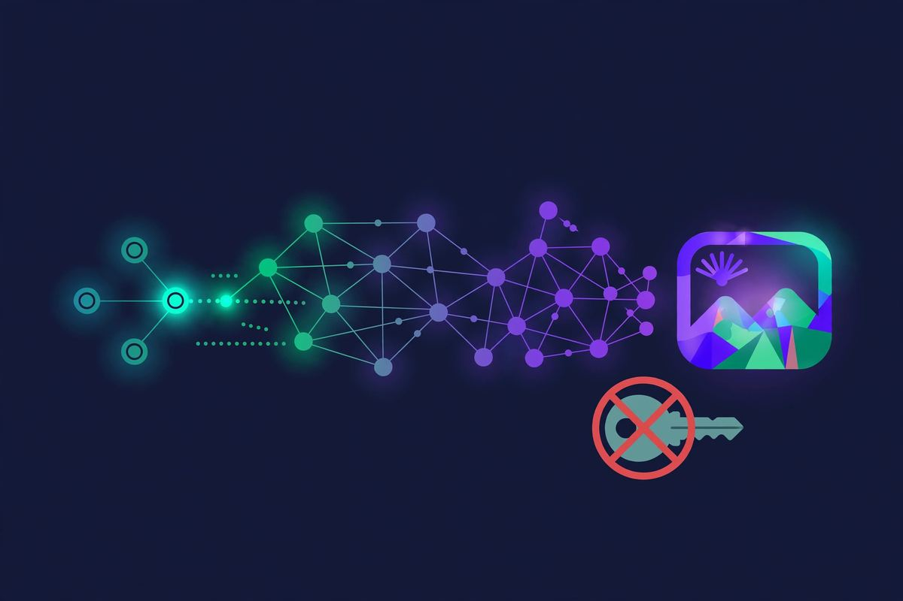
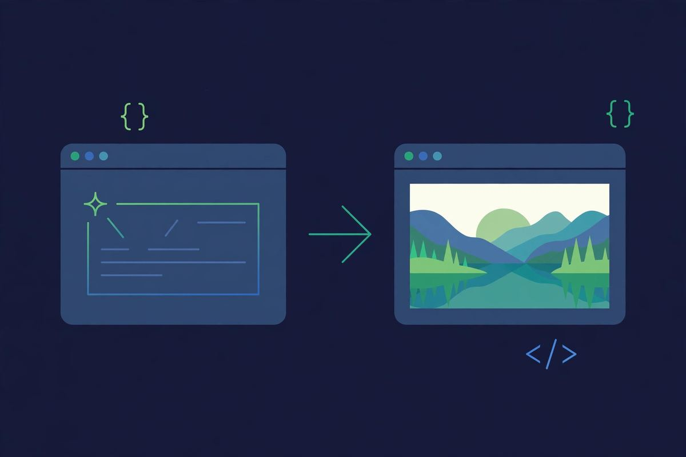

Pollinations.ai Review: Free AI Images, No Key, No Account
Pollinations.ai is the rare tool that's two products at once: a free image generator anyone can use in a browser, and a free API developers can call with no key. No sign up for either. It won our 5-generator no-signup image test outright — best quality, fastest, zero friction. Here's the full review.
| Verdict | 9/10 — the best free AI image deal, period |
|---|---|
| No sign up? | Yes — and no API key either |
| Price | Free, rate-limited by shared capacity |
| Best for | Quick images, prototypes, bots, side projects |
| Watch out for | Public rate limits; not for heavy production use |

What is Pollinations.ai?
Pollinations (pollinations.ai) is an open-source project offering free AI image and text generation. The web UI is dead simple: type a prompt, get an image. But the real product is the API — you can generate images with a plain URL, no authentication at all. Something like image.pollinations.ai/prompt/a%20red%20panda returns an actual image. That's it. That's the whole integration.
This URL-as-API design is why Pollinations powers an absurd number of demos, Discord bots, and side projects. When "add AI images" needs to take 30 seconds instead of 30 minutes of signup and key management, this is what people reach for.
It also does text generation — same deal, no key. Paste a prompt into the text endpoint and get a completion back. It's not going to replace a frontier chatbot for serious work (see Duck.ai for that), but for quick completions inside a script or bot, skipping the entire API-key dance is genuinely liberating. Most developers don't realize how much friction key management adds until it's gone.
No sign up, no API key — really?
Really. There is no account system and no key issuance. The web UI asks for nothing; the API authenticates nothing. I generated dozens of images across multiple sessions without ever seeing a login prompt, a key field, or a usage counter.
The honest tradeoff: you're on shared public infrastructure. During peak times, generation slows down. There's no SLA, no support ticket, no guaranteed throughput. For anything where reliability matters — a production app, a client project — you'd want a paid service. For everything else, the price (free) matches the guarantee (best effort) fairly.
Image quality: the test results
In our head-to-head test with the same 3 prompts across 5 generators, Pollinations came first. The red panda actually looked like a red panda. The 1970s sci-fi poster held its composition. Generation took under 10 seconds per image — fastest of the five.
Where it doesn't win: photorealistic human faces (still the hard problem for every free tier), and very long complex prompts where flagship paid models pull ahead. For illustration, concept art, memes, thumbnails, and placeholders, it's the best free option I tested. Full comparison in the image generator roundup.

The API developers actually use
A quick practical note for the builders: the image API takes parameters right in the URL — width, height, model, seed. Text generation works similarly. No headers, no tokens, no registration dance. I've seen it used in everything from Telegram bots to personal dashboards to classroom demos.
Rate limits exist but aren't published as hard numbers — it's fair-use on shared GPUs. If your project outgrows it, that's a good problem; graduate to a paid provider. Until then, this is the fastest way to ship AI images. We also list it on our free APIs page alongside the other no-key options.
What surprised me most in testing wasn't the API's simplicity but its reliability for casual volume. I generated several dozen images across two days — test prompts, variations, edge cases — and the failure rate was essentially zero. Slow responses during one evening peak, but nothing lost, nothing paywalled. For a free public utility, that robustness is remarkable.
Limits and catches
- Shared capacity: slowdowns at peak times, no guarantees. It's a public good, not a service.
- No NSFW controls debate aside: content filtering is lighter than commercial APIs — fine for most uses, something to know about.
- Not for production: no SLA, no support, no uptime promise. Prototype and personal-project territory.
- Model selection: good open models, not GPT-Image or Midjourney tier.
Notice the pattern: every catch is about capacity and guarantees, not about dark patterns. No watermark, no credit system, no "sign up for HD." The deal is honest.
Pollinations vs the alternatives
Against Craiyon: Craiyon is simpler and more fun for casual use, but Pollinations wins on quality and the API. Against Raphael AI: Raphael has the nicer web experience; Pollinations has the developer story. Against paid APIs (OpenAI, Replicate): you get reliability and top models there — at a price and with a key. Pollinations is the "just ship it" option.
FAQ
Is Pollinations.ai really free with no API key?
Yes. The image and text APIs require no key, no account, no registration. I verified this across multiple sessions — prompt in URL, image out.
Can I use Pollinations images commercially?
Check their current terms — open-source projects' licenses evolve. Generally the output is yours to use, but verify on their site for commercial projects.
Why is it free?
It's a community open-source project running on donated/sponsored GPU capacity. That's also why there's no SLA — it's a public good, not a business.
What happens when it's slow?
Wait or retry. Peak-time slowdowns are the main cost of free. For time-sensitive needs, have a paid fallback.
Is there a rate limit?
Fair-use throttling on shared infrastructure, but no published hard cap I hit in normal (or heavy-normal) use.
Pollinations vs Craiyon — which free image generator is better?
Different strengths. Pollinations wins on image quality, speed, and the developer API. Craiyon wins on sheer fun and volume — nine images per prompt with zero friction. For a quick meme, Craiyon. For anything you might actually keep, Pollinations.
Do I need to credit Pollinations?
Not required, but it's good karma for a free public project. A link back costs nothing and helps keep community infrastructure alive.
Verdict
Pollinations.ai is the rare free tool with no asterisk that matters. Best quality among free no-signup generators, fastest in testing, and an API so simple it feels like cheating. The only real cost is shared-capacity patience.
9/10. If you need one free image tool bookmarked, this is it. See the rest of our tested no-signup directory.
Open pollinations.ai — no sign up →
Tested 2026-10-11 · Providers change their signup policies — we re-verify regularly.